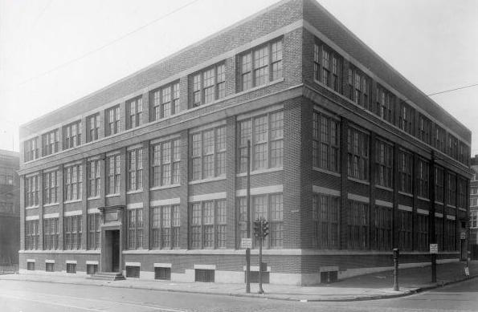
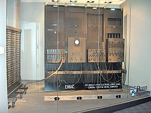
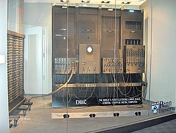
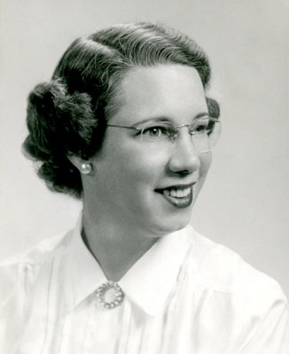
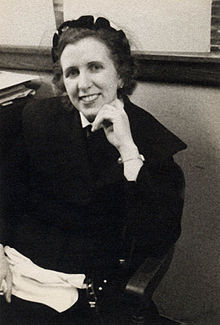
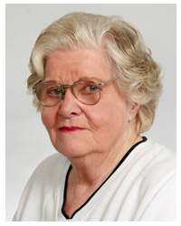

A Universidade de Pensilvânia está locaçizada na Filadélfia nos
estados unidos,
Foi fundado po benjamin franklin em 1740 ,e em 1765 tranformou-se
em universidade.
O News & World Report classificou a universidade
em quinto lugar entres as universidade
e faculdade dos estados unidos, ficando atras de Princeton,Harvard,Stanfor e yale no ano de 2008.
 

O ENIAC foi o primeiro computador de grande escala da história.
o projeto foi criada por engenheiros da
escola de
engenharia no estado americano da Pensilvânia. A ideia para a
criação do ENIAC
foi para a máquina realizar cálculos complexo
que levaria muito tempo para o ser humano realizar.
para programa o ENIAC era necessário
fios e interruptores para realizar as operações,o processo tinha
muita chance de ter erros e era extramamente demorado.

Malyr Wescoff Meltzer foi uma matemática e programadora
de computadores americanos e uma das programadora do ENIAC,
o primeiro computador eletronica em uso geral.
Meltzer foi contratada
pela Moore School of engineering depois
de se formar para fazer cálculos
meteorológicos,porque sabia
operar máquina de soma.
Melzer gostava de ser vonlutaria na biblioteca shir Ami.
ela també entregou Meals on Wheels por mais de 10 anos.

Frances Elizabeth foi uma das seis mulheres que programava o
Frances Elizabeth foi uma das seis mulheres que programava o
primeiro computador eletrônico. no seu primeiro sia de aula na universidade da pensilvânia
seu professor de matemática perguntou o que ela estava
fazendo naquela sala ao invés de estar em casa tento filhos.
Dessa forma, ela foi estudar jornalismo, o que a possibilitaria viajar.
Durante a Segunda Guerra Mundial,Betty foi contratada pela Escola Moore de
Engenharia, para trabalhar na área e logo ela foi escolhida
para ser uma das seis mulheres que programariam o ENIAC;

Ruth Teitelbaum,foi uma das programadora do primeiro computador do mundo.
Ruth foi contratado pela Escola Moore de Engenharia Elétrica da
Universidade da Pensilvânia para calcular trajetórias balísticas

